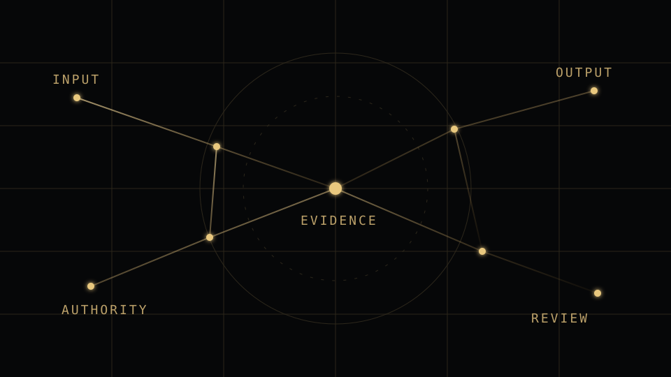

01
REVIEW-READY DELIVERABLE
Requirement-to-evidence matrix
Requirements, claims or review questions mapped against the authorised supporting source material.
EVIDENCE & ASSURANCE
Evidence in. Decision-grade proof out.
Built forAudit, compliance, assurance, procurement, programme and quality teams that need a visible line from requirement to source to gap to human decision.

 EVIDEXEVIDENCESOURCE-BOUNDGAPS VISIBLEHUMAN AUTHORITY
EVIDEXEVIDENCESOURCE-BOUNDGAPS VISIBLEHUMAN AUTHORITYWHAT YOU ACTUALLY GET
Evidex turns scattered authorised evidence into structured mappings, visible contradictions and a bounded review package instead of another opaque summary.
Requirements, claims or review questions mapped against the authorised supporting source material.
Missing, stale, conflicting or unresolved evidence surfaced before it becomes a review surprise.
A bounded, inspectable package prepared for the authorised professional or organisational decision maker.
EVIDENCE, NOT PROMISES
Controlled engineering evidence is shown as engineering evidence. Commercial validation is earned from customers.
Audit evidence route ↗ — controlled route proven. It prepares evidence and review findings without issuing an audit opinion or certifying control effectiveness.
Vendor due-diligence route ↗ — controlled route proven. It prepares vendor evidence without autonomously approving, rejecting, scoring or contracting with a supplier.
Impact evidence route ↗ — controlled route proven. It connects claims to evidence without certifying impact or inventing causal attribution.
Evidex prepares and binds evidence. It does not certify compliance, issue audit opinions, approve vendors, guarantee outcomes or replace authorised professional and organisational decision makers.
The controlled routes demonstrate engineering capability. They do not by themselves prove independent customer demand, repeat usage or willingness to pay.
WHAT RUNS UNDERNEATH
BOUNDED DELIVERY
One bounded questionnaire, audit criterion set, programme requirement, donor request, certification framework or other evidence question plus authorised source material.
Evidex maps the requirement or claim to evidence, surfaces gaps and contradictions, and prepares the controlled review package.
A requirement-to-evidence matrix, gap/contradiction register and a review-ready evidence assurance pack.
Compliance, audit opinions, vendor approval, impact conclusions and other consequential professional or organisational decisions remain human-owned.
PILOT SCOPE
The first engagement stays bounded so the team can measure the quality and utility of the review output before considering larger data volumes, recurring operations or integrations.

AI · DIO PRESENCE CORE
Vesper opens with Evidex EvidenceOps context already attached. Give her the requirement set, evidence problem and decision context; she will route the governed handoff.